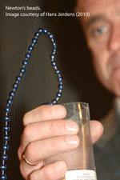

IYPT 2012 Problems
Problems for the 25th IYPT 2012
1. Gaussian cannon
A sequence of identical steel balls includes a strong magnet and lies in a nonmagnetic channel. Another steel ball is rolled towards them and collides with the end ball. The ball at the opposite end of the sequence is ejected at a surprisingly high velocity. Optimize the magnet’s position for the greatest effect.
2. Cutting the air
When a piece of thread (e.g., nylon) is whirled around with a small mass attached to its free end, a distinct noise is emitted. Study the origin of this noise and the relevant parameters.

3. String of beads
A long string of beads is released from a beaker by pulling a sufficiently long part of the chain over the edge of the beaker. Due to gravity the speed of the string increases. At a certain moment the string no longer touches the edge of the beaker (see picture). Investigate and explain the phenomenon.
4. Fluid bridge
If a high voltage is applied to a fluid (e.g. deionized water) in two beakers, which are in contact, a fluid bridge may be formed. Investigate the phenomenon. (High voltages must only be used under appropriate supervision – check local rules.)
5. Bright waves
Illuminate a water tank. When there are waves on the water surface, you can see bright and dark patterns on the bottom of the tank. Study the relation between the waves and the pattern.
6. Woodpecker toy
A woodpecker toy (see picture) exhibits an oscillatory motion. Investigate and explain the motion of the toy.
7. Drawing pins
A drawing pin (thumbtack) floating on the surface of water near another floating object is subject to an attractive force. Investigate and explain the phenomenon. Is it possible to achieve a repulsive force by a similar mechanism?
8. Bubbles
Is it possible to float on water when there are a large number of bubbles present? Study how the buoyancy of an object depends on the presence of bubbles.
9. Magnet and coin
Place a coin vertically on a magnet. Incline the coin relative to the magnet and then release it. The coin may fall down onto the magnet or revert to its vertical position. Study and explain the coin’s motion.
10. Rocking bottle
Fill a bottle with some liquid. Lay it down on a horizontal surface and give it a push. The bottle may first move forward and then oscillate before it comes to rest. Investigate the bottle’s motion.
11. Flat flow
Fill a thin gap between two large transparent horizontal parallel plates with a liquid and make a little hole in the centre of one of the plates. Investigate the flow in such a cell, if a different liquid is injected through the hole.
12. Lanterns
Paper lanterns float using a candle. Design and make a lantern powered by a single tea-light that takes the shortest time (from lighting the candle) to float up a vertical height of 2.5m. Investigate the influence of the relevant parameters. (Please take care not to create a risk of fire!)
13. Misty glass
Breathe on a cold glass surface so that water vapour condenses on it. Look at a white lamp through the misted glass and you will see coloured rings appear outside a central fuzzy white spot. Explain the phenomenon.
14. Granular splash
If a steel ball is dropped onto a bed of dry sand, a “splash” will be observed that may be followed by the ejection of a vertical column of sand. Reproduce and explain this phenomenon.
15. Frustrating golf ball
It often happens that a golf ball escapes from the hole an instant after it has been putted into it. Explain this phenomenon and investigate the conditions under which it can be observed.
16. Rising bubble
A vertical tube is filled with a viscous fluid. On the bottom of the tube, there is a large air bubble. Study the bubble rising from the bottom to the surface.
17. Ball in foam
A small, light ball is placed inside soap foam. The size of the ball should be comparable to the size of the foam bubbles. Investigate the ball’s motion as a function of the relevant parameters.
Several websites have released a preliminary version of the 2012 problem set. Please be aware that only the following is the official version!
Pictures:
- Picture “Woodpecker toy” © Mike Willshaw – http://www.flickr.com/photos/freakdog/308938937/
- Picture “String of beads” © Hans Jordens and Leonid Markovich
References
Below, find a link to supporting materials concerning the problems.
These materials are provided by independent persons or organizations, for the benefit of everyone who is interested. If you want your material listed here, contact the Executive Committee.
The IYPT wants to stress that any information found on any of these sites shall in no way be considered binding and authoritative.
We kindly remind all readers that the IYPT guidelines clearly stand for standard scientific conduct and proper procedures for citing material that is not one’s own work, while the grading has a focus on the novelty and consistency of the original research results presented.
- IYPT Reference Kit 2012 by Ilya Martchenko et al.